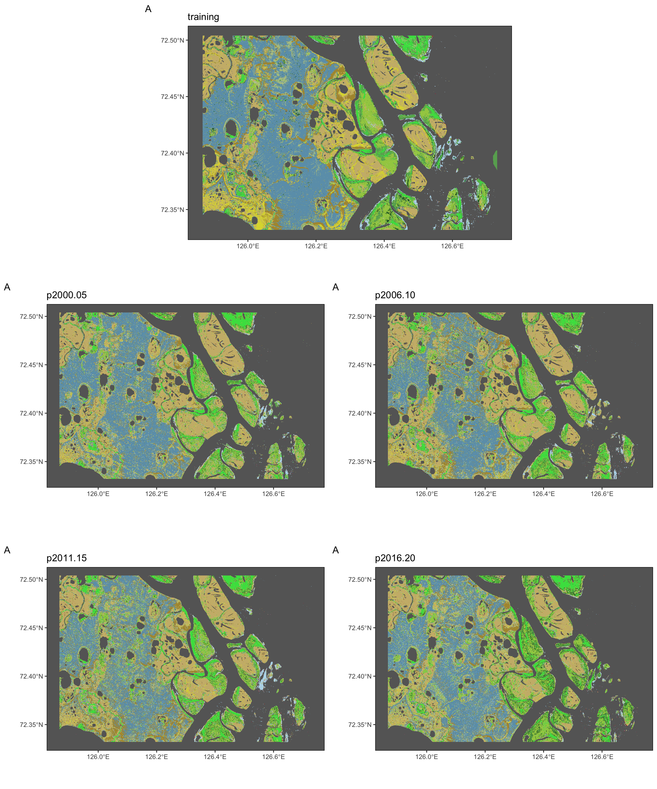
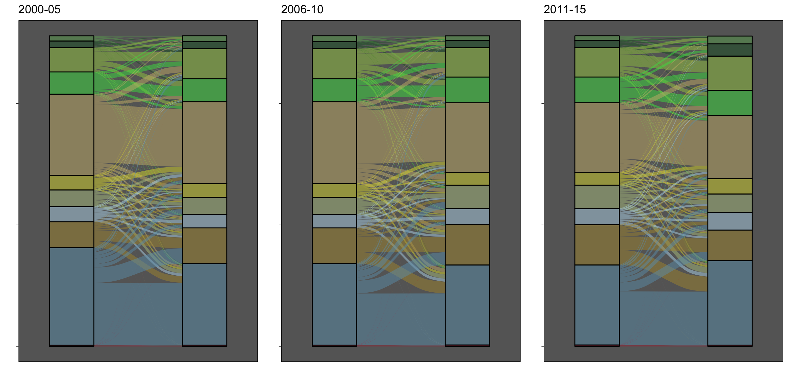
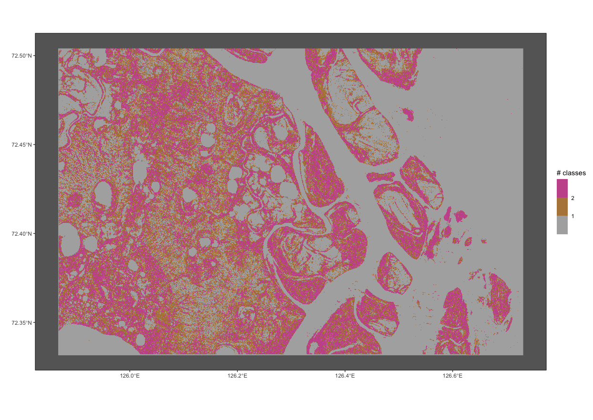

library(stars)
library(sf)
library(tidyverse)
library(ggalluvial)
library(gridExtra)
library(rgee)
ee_Initialize()
roi <- ee_as_sf(ee$FeatureCollection("users/slisovski/LenaDeltaHabitatClasses/LenaDeltaROI"))
fls <- list.files("~/Documents/ClassesTrend/", pattern = "*.tif", full.names = T)
str <- read_stars(fls, quiet = TRUE, proxy = TRUE) %>% merge()
sam <- st_as_sfc(st_bbox(c(xmin = 125.867165, xmax = 126.731148, ymin = 72.331738, ymax = 72.503998))) %>% st_set_crs(st_crs(roi))
classCol <- c('#68ab5f', '#1c5f2c', '#a3cc51', '#43DF4F', '#ccb879',
'#dcd939', '#b5c58f', '#b8d9eb', '#af963c', '#6c9fb8',
'#d2042d', 'transparent', 'transparent')
### training
train <- read_stars("Output/Sentinel_classes_mosaic.tif", proxy = TRUE) %>%
st_crop(sam %>% st_set_crs(st_crs(str))) %>% st_as_stars()
dyn <- str[sam %>% st_intersection(roi),] %>% st_as_stars()
dset <- c(st_warp(train, split(dyn[,,,1])) %>% setNames("training"),
split(dyn) %>% setNames(c("p2000-05", "p2006-10", "p2011-15", "p2016-20"))) %>%
merge()
t <- split(chkR) %>% as_tibble() %>% select(-x, -y) %>%
setNames(c("2000", "2006", "2011", "2016")) %>% filter(!is.na(`2000`))
mps <- lapply(1:dim(dset)[3], function(x) {
sP <- ggplot(sam) +
geom_sf(fill = "transparent", color = "transparent") +
geom_stars(data = dset[,,,x], show.legend = FALSE) +
scale_fill_gradientn(colors = classCol, breaks = 0:12, na.value = "transparent") +
scale_color_manual(values = classCol[1:11]) +
labs(x = "", y = "",
title = names(split(dset))[x],
tag = "A") +
theme(
panel.grid.major = element_blank(), panel.grid.minor = element_blank(),
panel.background = element_rect(fill = "grey40",
colour = "grey40"),
panel.border = element_rect(colour = "black", fill = "transparent"),
panel.grid = element_line(size = 0.08)
) +
coord_sf(
xlim = c(st_bbox(sam)["xmin"], st_bbox(sam)["xmax"]),
ylim = c(st_bbox(sam)["ymin"], st_bbox(sam)["ymax"])
)
})
png(glue::glue("DynClasses.png"), width = 2500, height = 1000*3, res = 200)
# do.call("grid.arrange", c(mps, ncol = 1))
grid.arrange(arrangeGrob(mps[[1]], ncol = 1, heights = 1000),
arrangeGrob(mps[[2]], mps[[3]], ncol = 2, heights = 1000),
arrangeGrob(mps[[4]], mps[[5]], ncol = 2, heights = 1000),
ncol = 1)
dev.off()
Do we need to train each period seperately - how?
t <- split(dyn) %>% as_tibble() %>% select(-x, -y) %>%
setNames(c("2000", "2006", "2011", "2016")) %>% filter(!is.na(`2000`))
years <- c("2000-05", "2006-10", "2011-15", "2016-20")
k <- lapply(split(tibble(st = 1:3, end = 2:4), 1:3), function(x) {
tab <- t[,unlist(c(x[1],x[2]))] %>% setNames(c("start", "end")) %>% unite(fluv, c("start", "end")) %>%
group_by(fluv) %>% summarise(count = n()) %>% mutate(start = sub("_.*", "", fluv), end = sub(".*_", "", fluv)) %>%
select(-fluv) %>% rownames_to_column("row_names") %>% pivot_longer(cols = c("start", "end")) %>% mutate(value = as.factor(as.numeric(value))) %>%
filter(value%in%c(0:10)) %>% mutate(name = ifelse(name=="start", unlist(x[1]), unlist(x[2])))
ggplot(tab,
aes(x = name, stratum = value, alluvium = row_names,
y = count,
fill = value, label = value)) +
scale_fill_manual(values = classCol[1:11]) +
scale_x_discrete(expand = c(.1, .1)) +
geom_flow(show.legend = F) +
geom_stratum(alpha = .5, show.legend = F) +
theme_dark() +
labs(x = "", y = "",
title = years[unlist(x[1,1])]) +
theme(
axis.text.y = element_blank(),
panel.grid.major = element_blank(), panel.grid.minor = element_blank(),
panel.background = element_rect(fill = "grey40",
colour = "grey40"),
panel.border = element_rect(colour = "black", fill = "transparent"),
panel.grid = element_line(size = 0.08)
)
})
png("Fluvials.png", width = 2500, height = 1200, res = 200)
do.call("grid.arrange", c(k, ncol = 3))
dev.off()
change <- dyn %>%
st_apply(c("x", "y"), function(x) length(unique(x)))
chPlot <- ggplot(sam) +
geom_sf(fill = "transparent", color = "transparent") +
geom_stars(data = change, show.legend = TRUE) +
scale_fill_stepsn(colors = c("white", "grey40", "orange", "blue"),
breaks = 0:3, limits = c(0,3),
na.value = "transparent", name = "# classes") +
labs(x = "", y = "") +
theme(
panel.grid.major = element_blank(), panel.grid.minor = element_blank(),
panel.background = element_rect(fill = "grey40",
colour = "grey40"),
panel.border = element_rect(colour = "black", fill = "transparent"),
panel.grid = element_line(size = 0.08)
) +
coord_sf(
xlim = c(st_bbox(sam)["xmin"], st_bbox(sam)["xmax"]),
ylim = c(st_bbox(sam)["ymin"], st_bbox(sam)["ymax"])
)